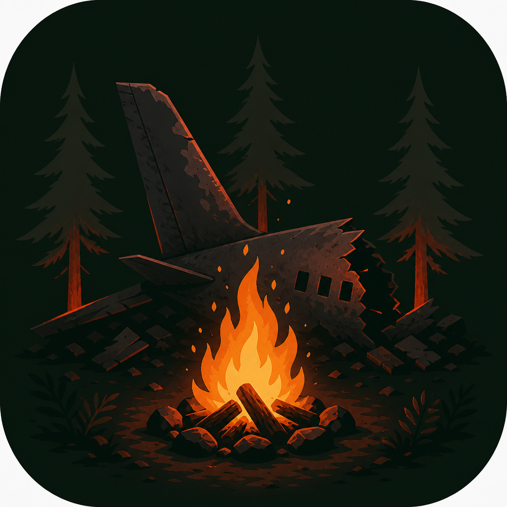

The crash starts at night. The wreck is already burning — use that fire, forage at dawn, craft, and hold out until rescue.
| The wreck | How you win and lose |
| Getting started | Install, setup, pass-and-play, Wi‑Fi |
| How a day goes | Night, forage, camp, madness |
| How to tap | Choosing survivors on a phone or PC |
| Hearts | Starting health, 0♥, dawn death |
| Forage | Draws, rest, hazards, food, bones |
| Camp | Fire, craft, trade, heals |
| Wreckage | The nine crash items |
| Night | Weather, animals, quiet cards, Rescue |
| Madness | One-heart checks and prompts |
| Components | Deck counts |
| Troubleshooting | Windows, firewall, Wi‑Fi |
This is a cooperative game. You share one camp. Talk. Give food. Craft for someone else. If anyone is alive when Rescue arrives, everyone still standing wins.
You are survivors of a plane crash in deep woods. There is no dealer after setup: the app is the table. You forage for wood, stone, fiber, and food; light a single campfire; craft spears, baskets, and shelter; and endure a deck of nights until searchlights find the wreck — or they do not.
At least one survivor is alive when The Rescue is revealed. Rescue is shuffled into the last three night cards of the expedition you chose (8, 12, or 16 nights).
Every survivor is dead. You can forage down to 0 hearts and still be alive until the next dawn. If you are still at 0♥ when dawn comes, you die unless you ate or used a heal before then.
Friends do not need Flutter. Send either:
flutter_windows.dll, and the data folder together.Windows may show SmartScreen because the app is unsigned. Choose More info → Run anyway. If it will not start, install the Microsoft Visual C++ Redistributable (x64).
| Button | Use when |
|---|---|
| Pass-and-play | One device. Hand it around on each forage turn. |
| Host on this device | You are the table. Others join on the same Wi‑Fi. |
| Join another device | Someone else is hosting. Enter their IP and your name. |
The host device runs the real game. Other devices send actions and receive the full table. Each phone only shows that player’s hand. Hearts, camp, and the roster stay visible. Forage buttons appear on the current player’s device. At night, everyone can assign their own defenses; the host taps Resolve night.
This is not internet play. Phones on different networks cannot join by IP.
Fire goes out at dawn. If you want fire tonight, someone must spend 1 wood during camp — unless last night’s weather forbade fire.
On a phone or PC, survivor boxes are how you choose people. There are no “give to” dropdowns. Select a card or craft first, then tap a name/hearts box.
| You selected | Then tap a survivor to… |
|---|---|
| Food or vodka | Give 1♥. Repeat until the card is spent. Give N♥ confirms a partial. Long-press a box to take back one pending heart. |
| Chocolate or adrenaline | Dump the whole heal into that person. |
| A card to give | Trade it immediately. |
| Spear or basket (craft) | Who receives it. You can craft a basket for someone else even if you already have one. |
| Shelter (4 players) | Who it covers (1–3). A third tap builds; or tap Build (N) for fewer. |
| Newspaper / tarp / blanket at night | Who it protects (newspaper covers two, tarp and blanket one). |
| Flare gun | Selecting the card covers the whole camp. No extra tap. |
| Spear at night | The spear-holder who uses it. |
| Raccoons | Who discards a food instead of losing 1♥. |
Tap mini cards to select items. Tap the name and hearts on a box to choose that survivor — so picking a card does not also assign a heart to its owner.
The roster is always five cells: four player seats (Empty if unused) plus Camp.
On your forage turn you must either rest or forage.
Fresh forage is hidden from everyone except the forager until camp or dawn. Then the table can see it.
Bone piles go straight to camp. Nobody can take bones from camp. Four bones at camp can assemble a circle during camp.
Matching forage cards of the same type stack in your hand.
Food restores hearts. Cards that heal 2 or 3 can be split among survivors (1♥ per tap until the value is used). 1♥ food is a single tap.
| Food | ♥ | Qty |
|---|---|---|
| Grub, Wild Onion, Berries, Currants, Dandelion | 1 | 4 / 4 / 4 / 4 / 3 |
| Wild Parsnip | 1 | 3 |
| Squirrel, Wild Plum, Minnows, Chanterelle | 2 | 3 / 3 / 3 / 4 |
| Pine Nuts | 2 | 5 |
| Honeycomb, Trout, Rabbit | 3 | 2 each |
| Card | Effect |
|---|---|
| Seagull | Nothing. You missed. |
| Moose | Lose 2♥. |
| Wasp Nest | Lose 1♥. |
| Poisonous mushrooms | Drop to 1♥ if you had more. |
| Paralysis mushroom | Cannot use your arms (cards, craft, wreckage) until the next day. |
| Neurotoxic mushroom | Cannot move or speak: no camp/gear, skip leftover forage, until the next day. |
| Magical mushrooms | Look at the next two night cards. They stay in the deck. |
| Psychotropic mushrooms | Draw a madness card immediately. |
Anyone who can act may eat, heal, trade, stash, light the fire, or craft. Then someone begins the next night.
Give cards by selecting one, then tapping who receives it. Stash non-wood cards in camp; take them back later. Bones cannot be taken from camp.
Concurrent stock. Used or destroyed items return to the craft deck.
| Item | Stock | Cost | What it does |
|---|---|---|---|
| Spear | 6 | 1 wood + 1 stone | Give to any survivor. Blocks one animal or human attack for them, then breaks. |
| Basket | 6 | 1 wood + 2 fiber | Give to someone who does not already have one. Extra forage card; optional rest-draw. Returns if the owner dies. |
| Shelter | 2 | 2 wood + 2 stone + 2 fiber | Covers up to 3 survivors from most weather. With fewer than 4 players, everyone is covered. With 4, choose who. Some nights destroy it. |
Tap the craft box, then tap who gets the spear or basket. Shelter with 4 players: tap occupants.
When four bone piles are at camp, tap Assemble bone circle. One dead survivor returns at 3♥. Everyone who was already living gains 2♥.
Nine items. Each player is dealt one at the crash. Owners choose who benefits. Heals can be used from a hand or from camp stash.
| Item | Effect |
|---|---|
| Taser | Protects 1 player from 1 animal or human attack. Reusable. |
| Bottle of Vodka | +3♥, shareable (1♥ per tap). Single use. |
| Chocolate Bar | +3♥, no split. Single use. |
| Newspaper | Protects 2 players from 1 weather event. Single use. |
| Airline Blanket | Protects 1 player from 1 weather event. Single use. |
| Tarp (×2) | Protects 1 player from 1 weather event. Reusable. |
| Adrenaline Syringe | Fully restores one player’s hearts. Single use. |
| Flare Gun | Protects the whole camp from 1 animal attack. Single use. |
A night card is revealed. You may still eat and use heals. Assign spears and wreckage by tapping, then the host (or the pass-and-play device) taps Resolve night.
| Card | What happens |
|---|---|
| The Cave | Permanent shelter for all. |
| The Fog, The Dark, The Quiet, The Calm, The Night, The Woods | Nothing. |
| The Owl | Everyone +1♥. |
| The Deer | Everyone +3♥. |
| The Score | Everyone +1♥, +1 more if fire is lit. |
| The Guilt, The Voices, The Fear, The Bugs, The Terror | Everyone −1♥. Fire cancels. |
| The Mountain | Everyone −2♥. Shelter destroyed. |
Hits unsheltered survivors unless a weather wreckage covers them. Several of these also ban fire tomorrow.
| Card | What happens |
|---|---|
| The Storm | Unsheltered −2♥. Shelter destroyed. No fire tomorrow. |
| The Drizzle / Light Rain / The Sleet | Unsheltered −1♥. No fire tomorrow. |
| The Rain (×3) | Unsheltered −1♥. No fire tomorrow. |
| Heavy Rain (×3) | Unsheltered −2♥. No fire tomorrow. |
| The Gale | Unsheltered −1♥. Everyone discards 1 forage (if any). |
| The Wind (×2) | Unsheltered −1♥. All fiber is lost. |
| The Flood | All forage lost. Shelter destroyed. No fire tomorrow. |
| Card | What happens |
|---|---|
| The Birds, Giant Squirrel, The Weasels | Everyone discards 1 forage (if any). |
| The Bats | Everyone −1♥. Fire cancels. |
| The Wolves | Everyone −2♥. Fire reduces the loss to 1♥. |
| Wolverine | Anyone holding a forage card −1♥. Fire cancels. |
| The Cougar | Everyone −2♥. |
| The Bear | Everyone −2♥. Shelter destroyed. |
| The Raccoons (×2) | Each survivor discards 1 food or loses 1♥. Fire cancels. |
After night, anyone at 1♥ who has not already drawn madness this night draws one card. Resolve it, then the next person at 1♥, until nobody at 1♥ is waiting.
Psychotropic mushrooms during forage also draw a madness card immediately.
| Deck | Cards |
|---|---|
| Forage | 109 |
| Night (including Rescue) | 41 |
| Madness | 21 |
| Craft in play (spear / basket / shelter) | 6 / 6 / 2 |
| Wreckage | 9 |
Forage resources: Wood 22, Stone 12, Fiber 12, Bone pile 9, plus the foods and eight hazards listed above.
An expedition does not use the entire night deck. Difficulty deals 8, 12, or 16 cards, with Rescue shuffled into the last three.
| Problem | What to try |
|---|---|
| SmartScreen blocks the installer or exe | More info → Run anyway. |
| App will not launch | Install the VC++ x64 redistributable. Keep data next to the exe if you used the zip. |
| Join cannot connect | Same Wi‑Fi. Type the host IP only (not including :7384 if the field is IP-only). Allow the host through Windows Firewall. The host app must stay open. |
| Joiners on another network | Not supported yet. Use the same LAN, or a mesh VPN, and join with that IP. |
| Host closed the app | The table ends. The host device is the authority. |
Internet play (room codes, play from different cities) is not in this build.